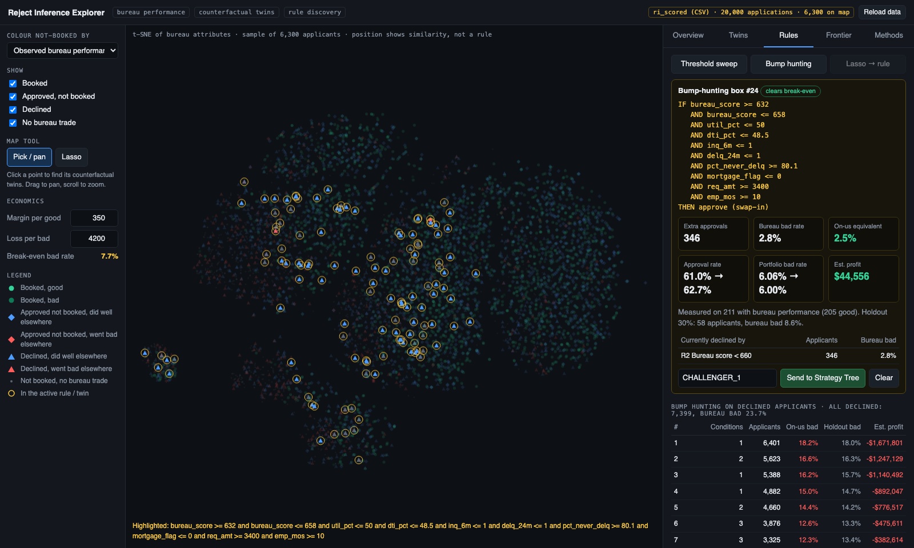

Reject Inference Explorer
The live app on 20,000 synthetic applications: similarity map, counterfactual twins, threshold sweep, bump hunting, lasso to rule, the approval and bad-rate frontier, and the three inference methods graded against bureau outcomes.
Open the ExplorerSlides: the method, step by step
38 slides on the problem and the mathematics: the booked-only model, hard cutoff, parceling and fuzzy augmentation worked through, the off-us to on-us factor, t-SNE, twins, and how each rule search works. With speaker notes.
Open the slides
How it works
- Runs entirely in your browser. The app's Python engine runs in Pyodide (Python compiled to WebAssembly). There is no server, and nothing is sent anywhere.
- First visit: it downloads Python, numpy and pandas (about 15 MB, then cached) and the sample data (about 5 MB). Startup takes 10 to 30 seconds.
- Lasso to rule needs scikit-learn for its decision tree. It is downloaded the first time you use the lasso (about 20 MB).
- Send to Strategy Tree downloads the challenger as a JSON strategy tree, since there is no server to save it on.
- The map is precomputed. The t-SNE layout is built by the pipeline and shipped with the sample. Twins, rules and every statistic are computed live, on the original attributes.
Try it in two minutes
- Open the Explorer. The Overview tab shows the three populations and what each decline rule would cost if its whole group were approved.
- Set Colour not-booked by to Champion decline rule. Look for a decline colour sitting inside the cloud of booked customers.
- Click a booked point (a green circle). The Twins tab lists the ten most similar applicants who were not booked, and how they performed at another lender.
- Open Rules and press Threshold sweep: no single policy cut can be relaxed profitably.
- Press Bump hunting. Read the rule card, then the holdout line. Click other rows of the table to trade volume against bad rate.
- Open Frontier to see the policy today, the policy plus the rule, and what each model could do alone.
Sample data
All data is synthetic, produced by data/generate_data.py: 20,000 applications with bureau-style attributes, a five-rule policy, internal outcomes for booked accounts and bureau outcomes for not-booked applicants who opened a trade elsewhere. Two pockets of creditworthy applicants that the policy declines are planted on purpose, so that the search has something to find.
The scores and inferred outcomes come from reject_inference/pipeline.py. To run everything on your own data, see the README.
Read this before trusting a number
- Selection. A bureau outcome exists only for applicants another lender approved. They are probably better than declined applicants who obtained nothing.
- Overfitting. On the sample, the most profitable bump-hunting rule shows 2.5% on-us equivalent in the search and 7.6% on the holdout. The holdout line is there to be read.
- The map shows who is similar to whom. Its axes have no meaning and nothing is computed from its coordinates.